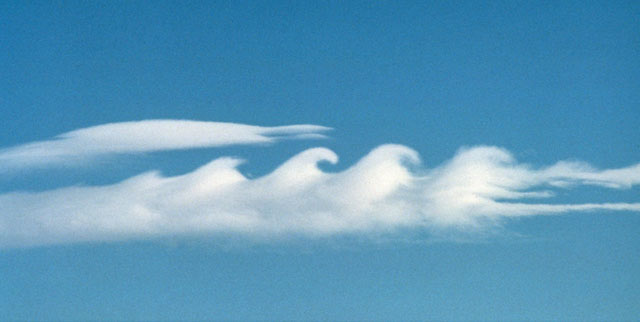

2-D test problem 3: The Kelvin-Helmholtz Instability
|
2-D test problem 3: The Kelvin-Helmholtz Instability |
|
|||||||||||||||||||||||||||||
Non-linear regime: The thumbnails below link to animations of the normal vorticity for the indicated relative Mach numbers of the shear layer, and carry the simulations to t = 12, well beyond when linearity ceases to be valid. The sense of the shear is reversed in the animations compared with the contour images above. Thus, the top layer is moving to the left in the animations, and the bottom layer is moving to the right. |
|||||||||
2M = 0.25 |
2M = 0.50 |
2M = 0.75 |
2M = 1.00 |
2M = 1.25 |
2M = 1.50 |
||||
2M = 1.75 |
2M = 2.00 |
2M = 2.25 |
2M = 2.50 |
2M = 2.75 |
2M = 3.00 |
||||
The formation of a "cat's eye" (a strong and sustained vortex tube prominant near the end of most of the animations) is a well-known effect and has been observed for years in simulations peformed by finite-difference codes (it is worth noting that most SPH codes cannot reproduce the K-H instability in general, and the cat's eye in particular). It is the end state for all unstable Mach numbers, with the most rapid growth at 2M ~ 1.5. For 2M > 1 (supersonic relative speeds), shocks are excited above and below the shear plane which cause much more of the fluid to become involved. These animations have been "bracketed" so that crimson means zero vorticity and the deepest blue means the most negative value attained (always along the original shear layer at t = 0). "Blood-red" indicates positive vorticity only found in the shocks. |
|||||||||
|
||||||||||||||||||||||||
Kelvin-Helmholtz instabilities in nature: The atmosphere surrounding a rapidly rotating planet is a particularly good natural laboratory for K-H instabilities since the coriolis effect is forever driving shear layers with relative speeds comparable to the rotation speed of the planet. On the Earth, K-H instabilities are occasionally observed in high clouds (Fig. 4). However, with its higher rotation speed, K-H instabilities are common-place in the Jovian atmosphere with the Great Red Spot (observed since Galileo's time) being the most spectacular example of a sustained cat's eye in the solar system (Fig. 5). |
||
 |
||
Figure 4. Clouds often form along shear layers (separating air masses of differing moisture and temperature), and are thus subject to the Kelvin-Hlemholtz instability, particularly for sufficiently high shear velocities (photo credit: Brooks Martner, NOAA/ETL). |
Figure 5. Jupiter's Great Red Spot is a vortex tube (cat's eye) suistained by transonic shear layers in the planet's atmosphere. Note the smaller-amplitude K-H instabilities in the surrounding gas, as well as within the Red Spot itself (photo credit: NASA). |
|